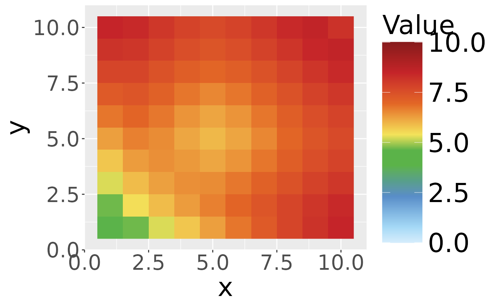

Plot a 3-by-3 panel of heatmaps across selected time stamps
Source:R/func_plot.R
plot_panel_heatmap_9.RdProduces nine raster heatmaps arranged in a 3-by-3 grid, one for each time
stamp in tstamp. Each panel shows the spatial field for a given input
(row) index and time step.
Usage
plot_panel_heatmap_9(
dat,
input_num,
tstamp,
max_y,
Nx,
Ny,
nT,
filename = "plot_panel",
savei = TRUE,
col_bgr = spdbl_default_col_bgr(),
path_fig = "."
)Arguments
- dat
List of length \(\geq \max(\code{tstamp})\). Each element is a matrix of dimension
c(n_inputs, Nx * Ny).- input_num
Integer. Row index within each time-step matrix to plot.
- tstamp
Integer vector of length 9. Time step indices to display.
- max_y
Numeric scalar. Upper limit of the colour scale.
- Nx
Integer. Number of grid points in the x-direction.
- Ny
Integer. Number of grid points in the y-direction.
- nT
Integer. Total number of time steps in
dat.- filename
Character. Base name for the saved PNG (used when
savei = TRUE). Defaults to"plot_panel".- savei
Logical. Whether to save the panel to disk. Defaults to
TRUE.- col_bgr
Character vector of colours for the heatmap gradient.
- path_fig
Character. Directory path where the file is saved when
savei = TRUE. Defaults to the current working directory.
Examples
if (requireNamespace("ggplot2", quietly = TRUE) &&
requireNamespace("ggpubr", quietly = TRUE) &&
requireNamespace("scales", quietly = TRUE)) {
data("dt_emulation")
d <- dt_emulation
p <- plot_panel_heatmap_9(d$dt_pde_test, input_num = 1,
tstamp = seq(2, 26, by = 3), max_y = 10,
Nx = 10, Ny = 10, nT = 26, savei = FALSE)
length(p)
p[[9]]
}
